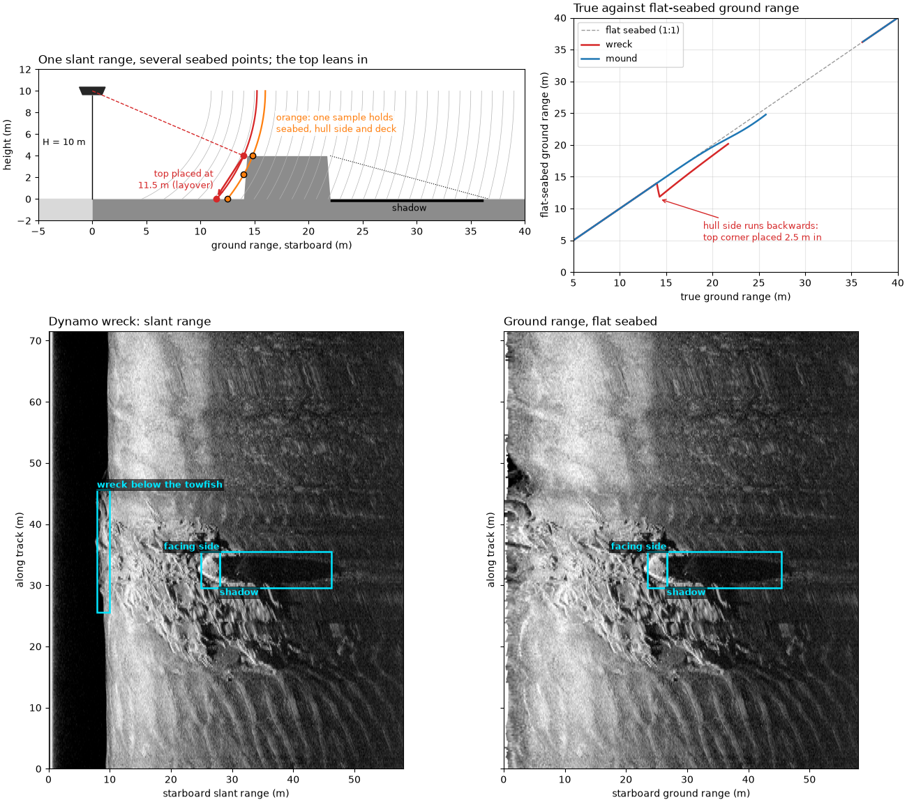
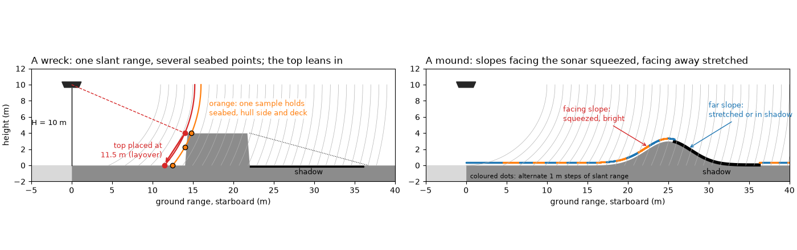
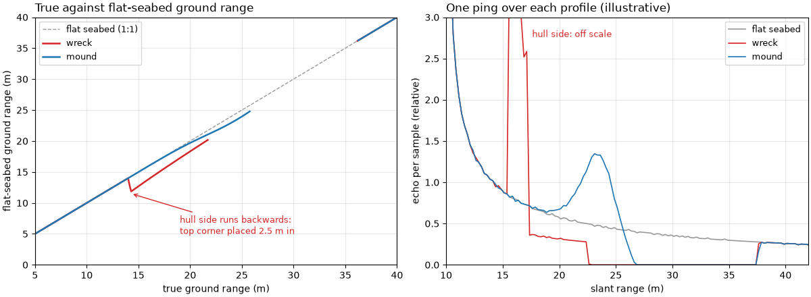
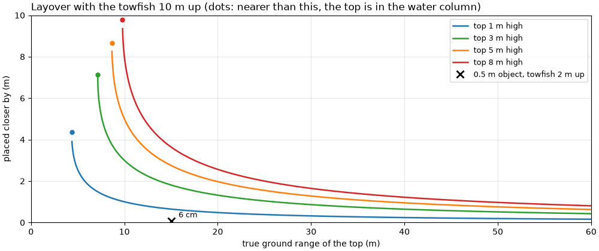
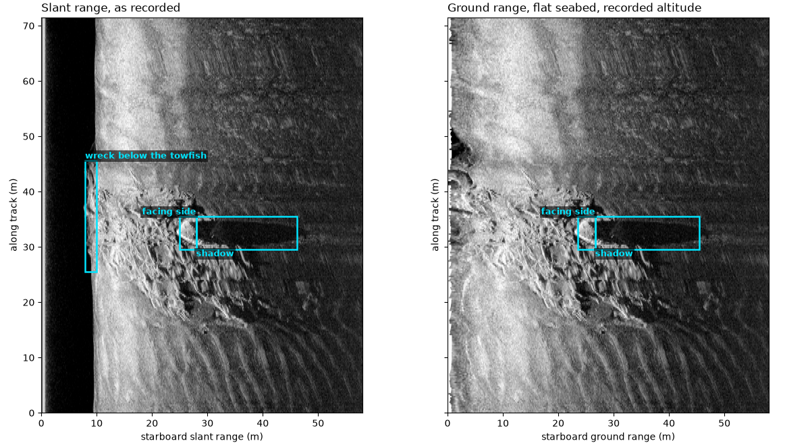
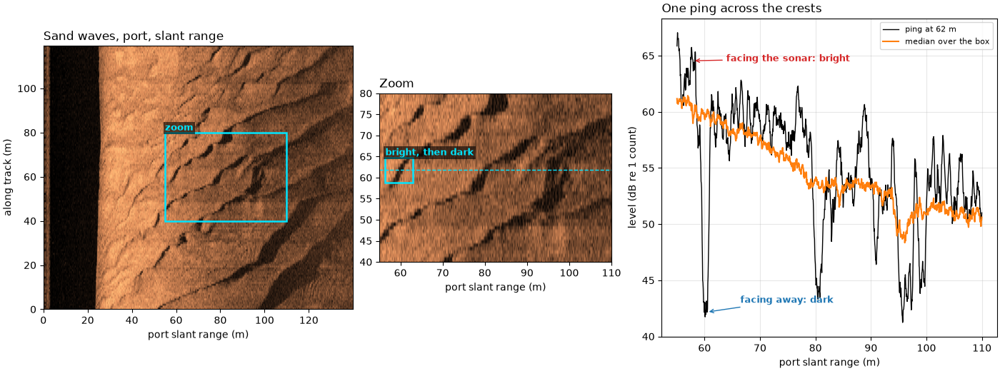

Note
Go to the end to download the full example code.
Slopes, relief and layover#

Each sample of a ping is one slant range R: it holds the echo of
every seabed point at that distance from the towfish. On a flat seabed
that is one point, and From slant range to ground range puts it at
ground range sqrt(R^2 - H^2) for altitude H. With a mound, a
slope or a wreck, the circle of radius R can cross the seabed at
several points, and their echoes add in the same sample.
Relief also changes how much seabed one sample holds. A slope facing the sonar runs nearly along the circles, so many meters of it fall in a few samples: it is squeezed and bright. A slope facing away runs across the circles at a steep angle, or is hidden from the sonar: it is stretched, dark, or in shadow.
The top of a tall object at ground range x and height h is
nearer the towfish than its base:
so the top’s echo arrives first and the object leans toward the sonar in the image. This is layover. The flat-seabed formula then puts the top at
which is closer than x by about h (2H - h) / (2x) far out, and by
much more near nadir. If R_top < H the top arrives before any flat
seabed and lands in the water column.
Sidescan measures time only, so it cannot undo this by itself. The fixes measure angle as well as time (interferometric sidescan and multibeam echosounders), or take the heights from a known depth map.
This page draws the geometry, maps true to flat-seabed ground range for a wreck and a mound, works the layover for a small object and a wreck, and then looks at a wreck and a field of sand waves in public data.
Data: BGS London Gateway, Klein 3000 at 400 kHz (Open Government Licence v3.0, contains data supplied by UKRI), and JNCC mid-Irish Sea (Open Government Licence v3.0); see Example data.
Usage: python examples/theory/plot_slopes_and_layover.py [output_dir]
# 2026 rshomberg@uri.edu
import sys
from pathlib import Path
import matplotlib.pyplot as plt
import numpy as np
from matplotlib.patches import Polygon, Rectangle
from scipy.ndimage import binary_closing, uniform_filter1d
from sidescanpy import datasets
from sidescanpy.export.windows.levels import with_db_var
from sidescanpy.io import read_and_convert
from sidescanpy.log import configure_logging
from sidescanpy.processing import (
along_track_distance_m,
altitude_from_bottom_track,
compute_geometric_ranges,
interpolate_aux_onto_pings,
smooth_navigation,
)
out = Path(sys.argv[1]) if len(sys.argv) > 1 else Path(".")
out.mkdir(parents=True, exist_ok=True)
configure_logging("ERROR")
MARK = "#00e5ff" # label colour, chosen to stand out on the images
STARBOARD, PORT = 1, 0
def mark(ax, x0, x1, y0, y1, text, ha="left", below=False, colour=MARK):
"""Box a feature and label it above (or below) the box."""
ax.add_patch(Rectangle((x0, y0), x1 - x0, y1 - y0, fill=False, ec=colour, lw=1.8))
ax.text(x0 if ha == "left" else x1, y0 if below else y1, text, color=colour, fontsize=9, fontweight="bold",
ha=ha, va="top" if below else "bottom", clip_on=True,
bbox=dict(fc="black", alpha=0.6, ec="none", pad=1.5))
def to_ground(image, ground, grid):
"""Resample each ping (row) of ``image`` from its ground ranges onto ``grid``."""
resampled = np.full((image.shape[0], grid.size), np.nan)
for i, (row, g) in enumerate(zip(image, ground)):
ok = np.isfinite(g)
if ok.sum() > 2:
resampled[i] = np.interp(grid, g[ok], row[ok], left=np.nan, right=np.nan)
return resampled
def flat_ground(x, z, altitude):
"""Where the flat-seabed formula puts a seabed point at ground range ``x`` and height ``z``."""
slant2 = x**2 + (altitude - z) ** 2
return np.sqrt(np.where(slant2 > altitude**2, slant2 - altitude**2, np.nan))
def lit(x, z, altitude):
"""True where the seabed point (x, z) can be seen from the towfish at (0, altitude)."""
ray_slope = (z - altitude) / np.maximum(x, 1e-9) # slope of the ray from the towfish
return ray_slope >= np.maximum.accumulate(ray_slope) - 1e-12
# Two illustrative profiles across the track (starboard), 1 cm apart.
H_DIAGRAM = 10.0
x_prof = np.arange(0.0, 50.0, 0.01)
WRECK = (14.0, 22.0, 4.0) # hull from 14 to 22 m out, 4 m high, near-vertical sides
z_wreck = np.interp(x_prof, [0, WRECK[0], WRECK[0] + 0.3, WRECK[1] - 0.3, WRECK[1], 50],
[0, 0, WRECK[2], WRECK[2], 0, 0])
MOUND = (25.0, 4.0, 3.0) # centre 25 m, width scale 4 m, height 3 m
z_mound = MOUND[2] * np.exp(-(((x_prof - MOUND[0]) / MOUND[1]) ** 2))
One sample, many seabed points#
A cross-section to scale, towfish 10 m up. Left: a wreck 4 m high with near-vertical sides, 14 to 22 m out. The grey arcs are slant ranges 1 m apart. The red arc, at the slant range of the hull’s sonar-facing top corner, also meets the flat seabed 2.5 m nearer the towfish, and the orange arc crosses the seabed, the hull side and the deck: those points echo in the same sample. The flat-seabed formula puts the top corner where the red arc meets the seabed (arrow). Behind the hull, the seabed the sound cannot reach is in shadow. Right: a smooth mound 3 m high. The coloured bars under it are equal 1 m steps of slant range: on the slope facing the towfish one step spans several meters of seabed, on the far slope much less, and the foot of the far slope is in shadow.
top_corner = (WRECK[0], WRECK[2])
r_corner = float(np.hypot(top_corner[0], H_DIAGRAM - top_corner[1]))
x_corner_flat = float(np.sqrt(r_corner**2 - H_DIAGRAM**2))
shadow_end = WRECK[1] * H_DIAGRAM / (H_DIAGRAM - WRECK[2])
print(f"wreck diagram: top corner at {top_corner[0]:.0f} m, {top_corner[1]:.0f} m high -> R = {r_corner:.2f} m; "
f"flat seabed puts it at sqrt({r_corner:.2f}^2 - {H_DIAGRAM:.0f}^2) = {x_corner_flat:.2f} m "
f"({top_corner[0] - x_corner_flat:.2f} m toward the towfish)")
R_SHARED = 16.0
print(f"slant range {R_SHARED:.0f} m meets the seabed at {np.sqrt(R_SHARED**2 - H_DIAGRAM**2):.2f} m, "
f"the hull side {H_DIAGRAM - np.sqrt(R_SHARED**2 - WRECK[0] ** 2):.2f} m up, and the deck "
f"{np.sqrt(R_SHARED**2 - (H_DIAGRAM - WRECK[2]) ** 2):.2f} m out")
print(f"shadow behind the hull ends at {WRECK[1]:.0f} x {H_DIAGRAM:.0f} / ({H_DIAGRAM:.0f} - {WRECK[2]:.0f}) "
f"= {shadow_end:.1f} m")
slant_mound = np.hypot(x_prof, H_DIAGRAM - z_mound)
seen_mound = lit(x_prof, z_mound, H_DIAGRAM)
peak = int(np.argmax(z_mound))
for name, part in (("facing", slice(int(19 / 0.01), peak)), ("far", slice(peak, int(31 / 0.01)))):
ground_len = x_prof[part][-1] - x_prof[part][0]
slant_len = slant_mound[part][-1] - slant_mound[part][0]
shaded = 100 * (1 - seen_mound[part].mean())
print(f"mound {name} slope, {x_prof[part][0]:.0f} to {x_prof[part][-1]:.0f} m: {ground_len:.1f} m of ground "
f"in {slant_len:.2f} m of slant range ({ground_len / slant_len:.2f} m per m); {shaded:.0f} % in shadow")
flat_ref = np.hypot(25.0, H_DIAGRAM) - np.hypot(19.0, H_DIAGRAM)
print(f"flat seabed 19 to 25 m: 6.0 m of ground in {flat_ref:.2f} m of slant range ({6.0 / flat_ref:.2f} m per m)")
def draw_wreck(ax, altitude=H_DIAGRAM):
ax.axhspan(-2.0, 0, color="0.85")
seen = lit(x_prof, z_wreck, altitude)
ax.fill_between(x_prof, -2, z_wreck, color="0.55", lw=0)
ax.fill_between(x_prof, -0.25, 0.0, where=~seen & (z_wreck == 0), color="k", lw=0)
ax.plot([WRECK[1], shadow_end], [WRECK[2], 0], color="k", lw=0.8, ls=":")
ax.text((WRECK[1] + shadow_end) / 2, -1.1, "shadow", ha="center", fontsize=9)
for rad in np.arange(altitude + 1, 40, 1.0):
a = np.linspace(-np.arcsin(min(altitude / rad, 1)), 0, 80)
ax.plot(rad * np.cos(a), altitude + rad * np.sin(a), color="0.7", lw=0.5)
for rad, colour in ((r_corner, "C3"), (R_SHARED, "C1")):
a = np.linspace(-np.arcsin(altitude / rad), 0, 200)
ax.plot(rad * np.cos(a), altitude + rad * np.sin(a), color=colour, lw=1.6)
ax.plot([0, top_corner[0]], [altitude, top_corner[1]], color="C3", lw=1, ls="--")
ax.plot(*top_corner, "o", color="C3", ms=6, zorder=5)
ax.plot(x_corner_flat, 0, "o", color="C3", ms=6, zorder=5)
ax.annotate("", (x_corner_flat, 0.15), (top_corner[0] - 0.1, top_corner[1] - 0.15),
arrowprops=dict(arrowstyle="->", color="C3", lw=1.8))
ax.text(x_corner_flat - 0.3, 1.0, f"top placed at\n{x_corner_flat:.1f} m (layover)", color="C3", fontsize=9,
ha="right")
shared = [(np.sqrt(R_SHARED**2 - altitude**2), 0.0), (WRECK[0], altitude - np.sqrt(R_SHARED**2 - WRECK[0] ** 2)),
(np.sqrt(R_SHARED**2 - (altitude - WRECK[2]) ** 2), WRECK[2])]
for px, pz in shared:
ax.plot(px, pz, "o", color="C1", ms=6, mec="k", zorder=6)
ax.text(WRECK[0] + 3.0, WRECK[2] + 2.2, "orange: one sample holds\nseabed, hull side and deck", color="C1",
fontsize=9, bbox=dict(fc="w", alpha=0.85, ec="none", pad=1))
ax.add_patch(Polygon([[-1.2, altitude + 0.35], [1.2, altitude + 0.35], [0.9, altitude - 0.35],
[-0.9, altitude - 0.35]], color="0.15"))
ax.text(-0.6, altitude / 2, f"H = {altitude:.0f} m", ha="right", fontsize=9)
ax.plot([0, 0], [0, altitude - 0.4], color="k", lw=1)
ax.set_xlim(-5, 40)
ax.set_ylim(-2, altitude + 2)
ax.set_aspect("equal")
ax.set_xlabel("ground range, starboard (m)")
ax.set_ylabel("height (m)")
def draw_mound(ax, altitude=H_DIAGRAM, step=1.0):
ax.axhspan(-2.0, 0, color="0.85")
ax.fill_between(x_prof, -2, z_mound, color="0.55", lw=0)
seen = lit(x_prof, z_mound, altitude)
ax.plot(x_prof, np.where(seen, np.nan, z_mound + 0.05), color="k", lw=4)
hidden = x_prof[~seen]
ax.text(hidden.mean(), -1.1, "shadow", ha="center", fontsize=9)
edges = np.arange(np.ceil(slant_mound.min()), slant_mound.max(), step)
cell = np.digitize(slant_mound, edges)
for k in np.unique(cell):
sel = (cell == k) & seen
if sel.any():
ax.plot(x_prof[sel], z_mound[sel] + 0.35, ".", color="C0" if k % 2 else "C1", ms=2.5)
for rad in edges:
a = np.linspace(-np.arcsin(min(altitude / rad, 1)), 0, 80)
ax.plot(rad * np.cos(a), altitude + rad * np.sin(a), color="0.7", lw=0.5)
ax.add_patch(Polygon([[-1.2, altitude + 0.35], [1.2, altitude + 0.35], [0.9, altitude - 0.35],
[-0.9, altitude - 0.35]], color="0.15"))
ax.annotate("facing slope:\nsqueezed, bright", (22.5, 2.3), (12, 5.5), fontsize=9, color="C3",
arrowprops=dict(arrowstyle="->", color="C3"))
ax.annotate("far slope:\nstretched or in shadow", (27.5, 2.1), (30, 6.0), fontsize=9, color="C0",
arrowprops=dict(arrowstyle="->", color="C0"))
ax.text(0.5, -1.6, f"coloured dots: alternate {step:.0f} m steps of slant range", fontsize=8)
ax.set_xlim(-5, 40)
ax.set_ylim(-2, altitude + 2)
ax.set_aspect("equal")
ax.set_xlabel("ground range, starboard (m)")
fig, (ax_w, ax_m) = plt.subplots(1, 2, figsize=(14, 4.4), constrained_layout=True)
draw_wreck(ax_w)
ax_w.set_title("A wreck: one slant range, several seabed points; the top leans in", loc="left")
draw_mound(ax_m)
ax_m.set_title("A mound: slopes facing the sonar squeezed, facing away stretched", loc="left")
fig.savefig(out / "slopes_and_layover_geometry.png", dpi=150)

wreck diagram: top corner at 14 m, 4 m high -> R = 15.23 m; flat seabed puts it at sqrt(15.23^2 - 10^2) = 11.49 m (2.51 m toward the towfish)
slant range 16 m meets the seabed at 12.49 m, the hull side 2.25 m up, and the deck 14.83 m out
shadow behind the hull ends at 22 x 10 / (10 - 4) = 36.7 m
mound facing slope, 19 to 25 m: 6.0 m of ground in 4.63 m of slant range (1.29 m per m); 0 % in shadow
mound far slope, 25 to 31 m: 6.0 m of ground in 6.51 m of slant range (0.92 m per m); 87 % in shadow
flat seabed 19 to 25 m: 6.0 m of ground in 5.45 m of slant range (1.10 m per m)
Where the flat-seabed formula puts each point#
Left: for each point of the two profiles, its true ground range against the ground range the flat-seabed formula gives it from its slant range. On flat seabed the two agree (the 1:1 line). The wreck’s deck and the mound’s facing slope are put too close to the towfish; where the curve runs backwards, points farther out are put nearer (layover), and the gaps are shadow. Right: what one ping would record, with an illustrative scattering law (echo per meter of seabed proportional to the cosine of the angle between the ray and the seabed’s normal, nothing from shadowed seabed), summed into 25 cm slant-range samples.
def echo_profile(x, z, altitude, d_slant=0.25, r_max=45.0):
"""Echo strength per slant-range sample for a seabed profile (illustrative scattering law)."""
dx, dz = np.gradient(x), np.gradient(z)
length = np.hypot(dx, dz)
normal = np.stack([-dz, dx]) / length
ray = np.stack([x, z - altitude])
ray = ray / np.hypot(*ray)
cos_inc = np.clip(-(normal * ray).sum(axis=0), 0, None)
weight = cos_inc * length * lit(x, z, altitude)
slant = np.hypot(x, altitude - z)
edges = np.arange(altitude, r_max, d_slant)
level, _ = np.histogram(slant, bins=edges, weights=weight)
return edges[:-1] + d_slant / 2, level / d_slant
def plot_mapping(ax):
ax.plot([0, 45], [0, 45], color="0.6", lw=1, ls="--", label="flat seabed (1:1)")
for z, colour, name in ((z_wreck, "C3", "wreck"), (z_mound, "C0", "mound")):
flat = flat_ground(x_prof, z, H_DIAGRAM)
seen = lit(x_prof, z, H_DIAGRAM)
ax.plot(x_prof, np.where(seen, flat, np.nan), color=colour, lw=1.8, label=name)
ax.annotate("hull side runs backwards:\ntop corner placed 2.5 m in", (WRECK[0] + 0.3, x_corner_flat), (19, 5),
fontsize=9,
color="C3", arrowprops=dict(arrowstyle="->", color="C3"))
ax.set_xlim(5, 40)
ax.set_ylim(0, 40)
ax.set_xlabel("true ground range (m)")
ax.set_ylabel("flat-seabed ground range (m)")
ax.legend(loc="upper left", fontsize=9)
ax.grid(alpha=0.3)
def plot_echo(ax):
flat_r, flat_e = echo_profile(x_prof, np.zeros_like(x_prof), H_DIAGRAM)
ax.plot(flat_r, flat_e, color="0.6", lw=1.2, label="flat seabed")
for z, colour, name in ((z_wreck, "C3", "wreck"), (z_mound, "C0", "mound")):
r, e = echo_profile(x_prof, z, H_DIAGRAM)
ax.plot(r, e, color=colour, lw=1.2, label=name)
ax.set_xlim(H_DIAGRAM, 42)
ax.set_ylim(0, 3.0)
ax.text(17.6, 2.85, "hull side: off scale", color="C3", fontsize=9, va="top")
ax.set_xlabel("slant range (m)")
ax.set_ylabel("echo per sample (relative)")
ax.legend(loc="upper right", fontsize=9)
ax.grid(alpha=0.3)
r_w, e_w = echo_profile(x_prof, z_wreck, H_DIAGRAM)
r_f, e_f = echo_profile(x_prof, np.zeros_like(x_prof), H_DIAGRAM)
r_m, e_m = echo_profile(x_prof, z_mound, H_DIAGRAM)
k_deck = int(np.argmin(np.abs(r_w - (r_corner + 0.3))))
print(f"illustrative echo at R = {r_w[k_deck]:.2f} m: wreck {e_w[k_deck]:.2f}, flat seabed {e_f[k_deck]:.2f} "
f"(x {e_w[k_deck] / e_f[k_deck]:.1f})")
far = r_m > 15
k_m = int(np.flatnonzero(far)[np.argmax(e_m[far])])
print(f"mound: brightest sample past 15 m {e_m[k_m]:.2f} at R = {r_m[k_m]:.2f} m, "
f"{e_m[k_m] / e_f[k_m]:.1f} x the flat seabed there; "
f"{int(np.sum((e_m == 0) & (r_m > 20) & (r_m < 35)))} samples with no echo (shadow)")
fig, (ax_map, ax_echo) = plt.subplots(1, 2, figsize=(12, 4.4), constrained_layout=True)
plot_mapping(ax_map)
ax_map.set_title("True against flat-seabed ground range", loc="left")
plot_echo(ax_echo)
ax_echo.set_title("One ping over each profile (illustrative)", loc="left")
fig.savefig(out / "slopes_and_layover_mapping.png", dpi=150)

illustrative echo at R = 15.62 m: wreck 3.99, flat seabed 0.82 (x 4.9)
mound: brightest sample past 15 m 1.35 at R = 23.12 m, 2.9 x the flat seabed there; 33 samples with no echo (shadow)
How far the top leans#
The flat-seabed position of a top h high at true ground range
x is sqrt(x^2 - 2Hh + h^2). For a small object and a low
towfish the shift is a few centimeters. For a tall wreck it is
meters near nadir, and the top lands in the water column when
x < sqrt(2Hh - h^2).
def layover(x, altitude, height):
"""How far the flat-seabed formula moves a top ``height`` high at ground range ``x`` toward the towfish."""
return x - flat_ground(x, height, altitude)
r_small = float(np.hypot(15.0, 2.0 - 0.5))
print(f"towfish 2 m up, 0.5 m object at 15 m: R_top = sqrt(15^2 + 1.5^2) = {r_small:.3f} m, flat seabed "
f"sqrt({r_small:.3f}^2 - 2^2) = {np.sqrt(r_small**2 - 4):.3f} m, {100 * layover(15.0, 2.0, 0.5):.1f} cm closer")
for height in (1.0, 3.0, 5.0, 8.0):
water = np.sqrt(2 * H_DIAGRAM * height - height**2)
shifts = ", ".join(f"{layover(x, H_DIAGRAM, height):.2f} m at {x:.0f} m" for x in (10.0, 20.0, 40.0))
print(f"towfish {H_DIAGRAM:.0f} m up, top {height:.0f} m high: {shifts}; in the water column inside {water:.1f} m")
fig, ax = plt.subplots(figsize=(10, 4.2), constrained_layout=True)
x_axis = np.linspace(0.1, 60, 2000)
for height, colour in ((1.0, "C0"), (3.0, "C2"), (5.0, "C1"), (8.0, "C3")):
ax.plot(x_axis, layover(x_axis, H_DIAGRAM, height), color=colour, lw=1.8, label=f"top {height:.0f} m high")
water = np.sqrt(2 * H_DIAGRAM * height - height**2)
ax.plot(water, layover(water + 1e-6, H_DIAGRAM, height), "o", color=colour, ms=5)
ax.plot(15.0, layover(15.0, 2.0, 0.5), "kx", ms=8, mew=2, label="0.5 m object, towfish 2 m up")
ax.text(15.8, 0.25, f"{100 * layover(15.0, 2.0, 0.5):.0f} cm", fontsize=9)
ax.set_xlim(0, 60)
ax.set_ylim(0, 10)
ax.set_xlabel("true ground range of the top (m)")
ax.set_ylabel("placed closer by (m)")
ax.set_title(f"Layover with the towfish {H_DIAGRAM:.0f} m up (dots: nearer than this, the top is in the "
"water column)", loc="left")
ax.legend(loc="upper right", fontsize=9)
ax.grid(alpha=0.3)
fig.savefig(out / "slopes_and_layover_lean.png", dpi=150)

towfish 2 m up, 0.5 m object at 15 m: R_top = sqrt(15^2 + 1.5^2) = 15.075 m, flat seabed sqrt(15.075^2 - 2^2) = 14.942 m, 5.8 cm closer
towfish 10 m up, top 1 m high: 1.00 m at 10 m, 0.48 m at 20 m, 0.24 m at 40 m; in the water column inside 4.4 m
towfish 10 m up, top 3 m high: 3.00 m at 10 m, 1.32 m at 20 m, 0.64 m at 40 m; in the water column inside 7.1 m
towfish 10 m up, top 5 m high: 5.00 m at 10 m, 1.97 m at 20 m, 0.95 m at 40 m; in the water column inside 8.7 m
towfish 10 m up, top 8 m high: 8.00 m at 10 m, 2.56 m at 20 m, 1.22 m at 40 m; in the water column inside 9.8 m
A wreck in the data#
The Dynamo wreck on one BGS line, starboard side, as on A wreck’s height from its shadow, which measures the height of its tallest part from its shadow. Positions are smoothed (the recorded ones jump at every fix). Left: native, slant range against distance along track, to the same scale. Right: the same pings in ground range with the recorded altitude.
The boxes mark the hull’s sonar-facing side (bright, squeezed into a few meters of range), the shadow behind it, and the wreck straight below the towfish: there the first echo, and the recorded altitude, come from the wreck, so the water column is narrower.
survey = read_and_convert([datasets.fetch("bgs_london_gateway_dynamo_88.xtf")], fmt="xtf", nav_crs="EPSG:32631")
survey = smooth_navigation(interpolate_aux_onto_pings(survey), window_s=5.0)
ds = survey.get_frequency("hz_400000").dataset.load()
ds = with_db_var(compute_geometric_ranges(altitude_from_bottom_track(ds)))
level_all = ds["backscatter_db"].values[:, STARBOARD]
slant = ds["slant_range_m"].values[0, STARBOARD]
sample_m = float(slant[1] - slant[0])
altitude_all = ds["altitude_m"].values.astype(float)
WINDOW = slice(540, 820) # pings shown, around the wreck
along = along_track_distance_m(ds, fill_nav_stalls=True)[WINDOW]
along = along - along[0]
level, altitude = level_all[WINDOW], altitude_all[WINDOW]
first_ping = WINDOW.start
print(f"pings {WINDOW.start}-{WINDOW.stop - 1} of {ds.sizes['ping']}: {along[-1]:.1f} m of track, "
f"{np.median(np.diff(along)):.2f} m per ping; samples every {100 * sample_m:.1f} cm")
# The shadow, measured as on the shadow-height page
smooth_all = uniform_filter1d(uniform_filter1d(level_all, int(round(1.0 / sample_m)), axis=1), 5, axis=0)
background = np.median(smooth_all, axis=0) # over the whole line, as there
smooth = smooth_all[WINDOW]
def shadow_run(ping):
"""Slant range (m) where the longest shadow run starts and its length (m)."""
below = (smooth[ping] < background - 3.0) & (slant > altitude[ping] + 2.0) & (slant < 60.0)
below = binary_closing(below, np.ones(int(round(0.5 / sample_m))))
edges = np.diff(np.concatenate([[0], below.astype(int), [0]]))
starts, stops = np.flatnonzero(edges == 1), np.flatnonzero(edges == -1)
if starts.size == 0:
return np.nan, 0.0
k = int(np.argmax(stops - starts))
return float(slant[starts[k]]), float(slant[stops[k] - 1] - slant[starts[k]])
wreck_pings = np.arange(640, 720) - first_ping
runs = np.array([shadow_run(p) for p in wreck_pings])
heights = altitude[wreck_pings] * runs[:, 1] / (runs[:, 0] + runs[:, 1])
k = int(np.nanargmax(heights))
p_top = int(wreck_pings[k])
r_top, shadow_len, h_top = runs[k, 0], runs[k, 1], heights[k]
a_top = altitude[p_top]
print(f"tallest shadow at ping {p_top + first_ping}: starts at R = {r_top:.1f} m, {shadow_len:.1f} m long, "
f"altitude {a_top:.2f} m -> top {h_top:.2f} m above the seabed")
# Altitude over the wreck against the seabed either side
outside = np.r_[0:80, level.shape[0] - 60:level.shape[0]]
a_seabed = float(np.median(altitude[outside]))
a_wreck = float(np.min(altitude[wreck_pings]))
print(f"altitude: {a_seabed:.2f} m over the seabed either side (median), down to {a_wreck:.2f} m over the wreck "
f"({a_seabed - a_wreck:.2f} m less)")
# Layover of that top
for name, a in (("recorded altitude at that ping", a_top), ("seabed altitude either side", a_seabed)):
h = a * shadow_len / (r_top + shadow_len)
x_true = float(np.sqrt(r_top**2 - (a - h) ** 2))
x_flat = float(np.sqrt(r_top**2 - a**2))
print(f"with the {name} ({a:.2f} m): top {h:.2f} m high, true ground range "
f"sqrt({r_top:.1f}^2 - {a - h:.2f}^2) = {x_true:.2f} m, flat seabed sqrt({r_top:.1f}^2 - {a:.2f}^2) = "
f"{x_flat:.2f} m: {x_true - x_flat:.2f} m toward the towfish")
# Bright sonar-facing side: level just before the shadow against the seabed at the same range
face = (slant > r_top - 3.0) & (slant < r_top)
face_rows = slice(max(k - 5, 0) + wreck_pings[0], k + 6 + wreck_pings[0])
face_db = float(np.median(smooth[face_rows][:, face]))
seabed_db = float(np.median(background[face]))
shadow_part = (slant > r_top + 2) & (slant < r_top + shadow_len - 2)
shadow_db = float(np.median(smooth[face_rows][:, shadow_part]))
seabed_shadow_db = float(np.median(background[shadow_part]))
print(f"3 m before the shadow (the facing side): {face_db:.1f} dB against {seabed_db:.1f} dB for the seabed at that "
f"range (+{face_db - seabed_db:.1f} dB); in the shadow {shadow_db:.1f} dB against {seabed_shadow_db:.1f} dB "
f"({shadow_db - seabed_shadow_db:.1f} dB)")
# Images, both projections
n_show = int(60.0 / sample_m)
native = level[:, :n_show]
grid = np.arange(0.0, 58.0, sample_m)
ground_img = to_ground(native, ds["ground_range_m"].values[WINDOW, STARBOARD, :n_show], grid)
lo, hi = np.nanpercentile(native[:, slant[:n_show] > 10], [1, 99.7])
y_top = along[p_top]
y_wreck = (along[wreck_pings[0]], along[wreck_pings[-1]])
def draw_wreck_pair(ax_s, ax_g, labels=True):
for ax, img, x_max in ((ax_s, native, slant[n_show - 1]), (ax_g, ground_img, grid[-1])):
ax.imshow(img, cmap="gray", vmin=lo, vmax=hi, origin="lower", aspect="equal",
extent=[0, x_max, along[0], along[-1]], interpolation="antialiased")
ax.set_xlim(0, 58)
ax.set_ylabel("along track (m)")
ax_s.set_xlabel("starboard slant range (m)")
ax_g.set_xlabel("starboard ground range (m)")
g_face0 = np.sqrt((r_top - 3.0) ** 2 - a_top**2)
g_top = np.sqrt(r_top**2 - a_top**2)
g_shadow_end = np.sqrt((r_top + shadow_len) ** 2 - a_top**2)
if not labels:
return
for ax, (f0, f1, s1) in ((ax_s, (r_top - 3.0, r_top, r_top + shadow_len)), (ax_g, (g_face0, g_top, g_shadow_end))):
mark(ax, f0, f1, y_top - 3, y_top + 3, "facing side", ha="right")
mark(ax, f1, s1, y_top - 3, y_top + 3, "shadow", below=True)
mark(ax_s, a_wreck - 0.5, a_seabed + 0.5, *y_wreck, "wreck below the towfish")
fig, (ax_s, ax_g) = plt.subplots(1, 2, figsize=(12, 6.6), sharey=True, constrained_layout=True)
draw_wreck_pair(ax_s, ax_g)
ax_s.set_title("Slant range, as recorded", loc="left")
ax_g.set_title("Ground range, flat seabed, recorded altitude", loc="left")
fig.savefig(out / "slopes_and_layover_wreck.png", dpi=150)

pings 540-819 of 1234: 71.5 m of track, 0.25 m per ping; samples every 3.0 cm
tallest shadow at ping 667: starts at R = 28.0 m, 18.2 m long, altitude 8.44 m -> top 3.33 m above the seabed
altitude: 9.53 m over the seabed either side (median), down to 8.41 m over the wreck (1.12 m less)
with the recorded altitude at that ping (8.44 m): top 3.33 m high, true ground range sqrt(28.0^2 - 5.11^2) = 27.49 m, flat seabed sqrt(28.0^2 - 8.44^2) = 26.66 m: 0.83 m toward the towfish
with the seabed altitude either side (9.53 m): top 3.76 m high, true ground range sqrt(28.0^2 - 5.77^2) = 27.36 m, flat seabed sqrt(28.0^2 - 9.53^2) = 26.29 m: 1.07 m toward the towfish
3 m before the shadow (the facing side): 52.6 dB against 44.3 dB for the seabed at that range (+8.3 dB); in the shadow 32.4 dB against 38.5 dB (-6.1 dB)
Sand waves in the data#
The port side of a mid-Irish Sea line crossing sand waves, 400 kHz, in slant range (the same sonar and line as the image pair on From slant range to ground range). Each crest is a bright band followed, farther out, by a dark one: the flank facing the sonar, then the flank facing away. Left: 120 m of the line. Middle: a zoom on the boxed crests. Right: one ping across them, the level smoothed over 0.5 m, and the seabed level at the same range over the box (median over its pings).
The dark side departs from the seabed level more than the bright side. Over the box, the level relative to that median runs from the 1st to the 99th percentile as printed below: the darkest samples fall much further below it than the brightest rise above it, and more samples are dark than bright. Darker and wider shadows than bright flanks are what the geometry predicts for flanks facing away. The image alone cannot say how steep each flank is, or whether the darkest bands are full shadow or only a low grazing angle.
bed = read_and_convert([datasets.fetch("jncc_mid_irish_sea_MIS15_2.xtf")], fmt="xtf")
bed = bed.get_frequency("hz_400000").dataset.load()
bed_along = along_track_distance_m(smooth_navigation(bed))
d_bed = 1500.0 / (2 * float(bed.attrs["sample_rate_hz"]))
rows = np.flatnonzero((bed_along >= 520.0) & (bed_along <= 640.0))
n_bed = int(round(140.0 / d_bed))
bed_slant = np.arange(n_bed) * d_bed
bed_db = 20 * np.log10(np.abs(bed["backscatter_intensity"].values[rows, PORT, :n_bed]) + 1.0)
bed_y = bed_along[rows] - bed_along[rows[0]]
half_m = int(round(0.5 / d_bed))
bed_smooth = uniform_filter1d(bed_db, half_m, axis=1)
BOX_R, BOX_Y = (55.0, 110.0), (40.0, 80.0)
in_box_r = (bed_slant >= BOX_R[0]) & (bed_slant <= BOX_R[1])
in_box_y = (bed_y >= BOX_Y[0]) & (bed_y <= BOX_Y[1])
box = bed_smooth[np.ix_(in_box_y, in_box_r)]
anomaly = box - np.median(box, axis=0)
p1, p5, p95, p99 = np.percentile(anomaly, [1, 5, 95, 99])
print(f"sand waves, port, rows {rows[0]}-{rows[-1]}, altitude {np.median(bed['altitude_m'].values[rows]):.1f} m; "
f"box {BOX_R[0]:.0f}-{BOX_R[1]:.0f} m slant range x {BOX_Y[1] - BOX_Y[0]:.0f} m along track")
print(f"level minus the median at the same range: 1 % {p1:.1f} dB, 5 % {p5:.1f} dB, 95 % +{p95:.1f} dB, "
f"99 % +{p99:.1f} dB; {100 * np.mean(anomaly > 3):.1f} % of samples 3 dB above, "
f"{100 * np.mean(anomaly < -3):.1f} % 3 dB below")
# The same over a box on the starboard side of the same pings
stbd = uniform_filter1d(20 * np.log10(np.abs(bed["backscatter_intensity"].values[rows, STARBOARD, :n_bed]) + 1.0),
half_m, axis=1)[np.ix_(in_box_y, in_box_r)]
stbd_anom = stbd - np.median(stbd, axis=0)
print(f"starboard, same pings and ranges: 1 % {np.percentile(stbd_anom, 1):.1f} dB, "
f"99 % +{np.percentile(stbd_anom, 99):.1f} dB")
PROFILE_Y = 62.0
prow = int(np.argmin(np.abs(bed_y - PROFILE_Y)))
prof_anom = bed_smooth[prow, in_box_r] - np.median(box, axis=0)
prof_r = bed_slant[in_box_r]
k_dark = int(np.argmin(prof_anom))
near = np.flatnonzero((prof_r > prof_r[k_dark] - 4.0) & (prof_r < prof_r[k_dark]))
k_bright = int(near[np.argmax(prof_anom[near])])
print(f"ping at {PROFILE_Y:.0f} m: darkest {prof_anom[k_dark]:.1f} dB at {prof_r[k_dark]:.1f} m; within 4 m nearer, "
f"brightest +{prof_anom[k_bright]:.1f} dB at {prof_r[k_bright]:.1f} m")
bed_lo, bed_hi = np.nanpercentile(bed_db[:, bed_slant > 30], [2, 99.5])
def draw_bedforms(ax_full, ax_zoom, ax_prof, labels=True):
ax_full.imshow(bed_db, cmap="copper", vmin=bed_lo, vmax=bed_hi, origin="lower", aspect="equal",
extent=[0, bed_slant[-1], 0, bed_y[-1]], interpolation="antialiased")
ax_full.set_xlabel("port slant range (m)")
ax_full.set_ylabel("along track (m)")
mark(ax_full, BOX_R[0], BOX_R[1], *BOX_Y, "zoom" if labels else "")
ax_zoom.imshow(bed_db, cmap="copper", vmin=bed_lo, vmax=bed_hi, origin="lower", aspect="equal",
extent=[0, bed_slant[-1], 0, bed_y[-1]], interpolation="antialiased")
ax_zoom.set_xlim(*BOX_R)
ax_zoom.set_ylim(*BOX_Y)
ax_zoom.axhline(bed_y[prow], color=MARK, lw=1, ls="--")
if labels:
mark(ax_zoom, prof_r[k_bright] - 1.5, prof_r[k_dark] + 2.5, bed_y[prow] - 3, bed_y[prow] + 3,
"bright, then dark")
ax_zoom.set_xlabel("port slant range (m)")
if ax_prof is None:
return
ax_prof.plot(bed_slant[in_box_r], bed_smooth[prow, in_box_r], color="k", lw=1, label=f"ping at {PROFILE_Y:.0f} m")
ax_prof.plot(bed_slant[in_box_r], np.median(box, axis=0), color="C1", lw=1.5, label="median over the box")
for kk, text, colour, y_text in ((k_bright, "facing the sonar: bright", "C3", 64.5),
(k_dark, "facing away: dark", "C0", 43.0)):
ax_prof.annotate(text, (prof_r[kk], bed_smooth[prow, in_box_r][kk]), (prof_r[kk] + 6, y_text),
color=colour, fontsize=9, fontweight="bold", arrowprops=dict(arrowstyle="->", color=colour))
ax_prof.set_xlabel("port slant range (m)")
ax_prof.set_ylabel("level (dB re 1 count)")
ax_prof.legend(loc="upper right", fontsize=8)
ax_prof.grid(alpha=0.3)
fig, (ax_full, ax_zoom, ax_prof) = plt.subplots(1, 3, figsize=(14, 5.2), width_ratios=[1.2, 0.9, 1.3],
constrained_layout=True)
draw_bedforms(ax_full, ax_zoom, ax_prof)
ax_full.set_title("Sand waves, port, slant range", loc="left")
ax_zoom.set_title("Zoom", loc="left")
ax_prof.set_title("One ping across the crests", loc="left")
fig.savefig(out / "slopes_and_layover_sand_waves.png", dpi=150)

sand waves, port, rows 622-766, altitude 25.2 m; box 55-110 m slant range x 40 m along track
level minus the median at the same range: 1 % -13.2 dB, 5 % -8.6 dB, 95 % +4.7 dB, 99 % +7.0 dB; 14.7 % of samples 3 dB above, 20.3 % 3 dB below
starboard, same pings and ranges: 1 % -5.5 dB, 99 % +3.9 dB
ping at 62 m: darkest -17.9 dB at 60.4 m; within 4 m nearer, brightest +5.6 dB at 57.9 m
Slopes and layover, together#
Top: the wreck cross-section and where the flat-seabed formula puts each point. Bottom: the Dynamo wreck in slant range and in ground range, with the facing side, the shadow, and the wreck below the towfish boxed.
fig = plt.figure(figsize=(13, 11.5), constrained_layout=True)
upper, lower = fig.subfigures(2, 1, height_ratios=[1, 1.6])
ax_a, ax_b = upper.subplots(1, 2, width_ratios=[1.5, 1])
draw_wreck(ax_a)
ax_a.set_title("One slant range, several seabed points; the top leans in", loc="left")
plot_mapping(ax_b)
ax_b.set_title("True against flat-seabed ground range", loc="left")
ax_s, ax_g = lower.subplots(1, 2, sharey=True)
draw_wreck_pair(ax_s, ax_g)
ax_s.set_title("Dynamo wreck: slant range", loc="left")
ax_g.set_title("Ground range, flat seabed", loc="left")
fig.savefig(out / "slopes_and_layover.png", dpi=150)
Reading the result#
One sample can hold several seabed points. In the drawn wreck
(towfish 10 m up, hull 4 m high from 14 m out), the slant range
16 m meets the flat seabed at 12.49 m, the hull side 2.25 m up and the
deck 14.83 m out, and all three echo in one sample. The hull’s top
corner is 15.23 m away, so the flat-seabed formula puts it at
sqrt(15.23^2 - 10^2) = 11.49 m, 2.51 m toward the towfish, in
front of the hull’s own foot. With the illustrative scattering law the
sample just past the top corner is 4.9 times as strong as flat seabed
there.
Facing slopes squeeze, far slopes stretch or hide. On the mound, the 6 m of the facing slope from 19 to 25 m fit into 4.63 m of slant range (1.29 m of seabed per meter, against 1.10 for flat seabed at the same range), and its brightest sample is 2.9 times the flat seabed’s. The far slope from 25 to 31 m spreads over 6.51 m (0.92 m per meter), and 87 % of it is in shadow.
Layover is small for small objects, large for tall ones. With the
towfish 2 m up, the top of a 0.5 m object 15 m out is at
sqrt(15^2 + 1.5^2) = 15.075 m, and the flat-seabed formula puts it
at sqrt(15.075^2 - 2^2) = 14.94 m, 5.8 cm closer: less than the
object’s own size. With the towfish 10 m up, a top 5 m high moves
1.97 m at 20 m and 0.95 m at 40 m; 8 m high, 2.56 m and 1.22 m. Inside
sqrt(2Hh - h^2), 8.7 m for the 5 m top, it lands in the water
column.
The Dynamo wreck. The tallest shadow (ping 667) starts at 28.0 m of slant range and runs 18.2 m. With the recorded altitude at that ping, 8.44 m, the shadow formula gives a top 3.33 m high, as on A wreck’s height from its shadow. But the recorded altitude drops from 9.53 m over the seabed either side to 8.41 m over the wreck, 1.12 m less: the first echo, and the altimeter, see the wreck below the towfish (or the towfish rose; the file cannot tell which). Taking the seabed altitude, 9.53 m, the top is 3.76 m high. The flat-seabed formula then places the top 0.83 m (with 8.44 m) to 1.07 m (with 9.53 m) closer to the track than it is. The 3 m of hull before the shadow are 8.3 dB brighter than the seabed at that range across the whole line, and the shadow 6.1 dB darker.
Sand waves. In the boxed field the level runs from 13.2 dB below the median at the same range (1st percentile) to 7.0 dB above it (99th percentile); 20.3 % of samples are more than 3 dB below and 14.7 % more than 3 dB above. On the ping drawn, a bright band 5.6 dB above the median sits 2.5 m nearer than a dark band 17.9 dB below it. The same pings on the starboard side, over different seabed, span only -5.5 to +3.9 dB. Bright-then-dark pairs, with the dark side deeper and wider, fit flanks facing the sonar and flanks facing away or in shadow.
What cannot be measured here. Without a depth map none of these numbers gives a slope angle or the true position of a top. The shadow gives a height only if the seabed under the shadow is flat and its altitude is known; the layover estimate inherits both. Brightness alone cannot separate a slope facing the sonar from a patch of harder or rougher seabed, nor full shadow from very low grazing. An interferometric sidescan or a multibeam echosounder, which measures the angle of each echo, or a depth map from either, would turn these into measured heights and positions.
In sidescanpy: compute_geometric_ranges()
uses the flat-seabed formula, so relief is placed as this page shows:
facing slopes squeezed, tops leaning in, the deck of a wreck
displaced toward the track. detect_shadow_proposals()
measures shadow heights for small objects.
Total running time of the script: (0 minutes 10.840 seconds)